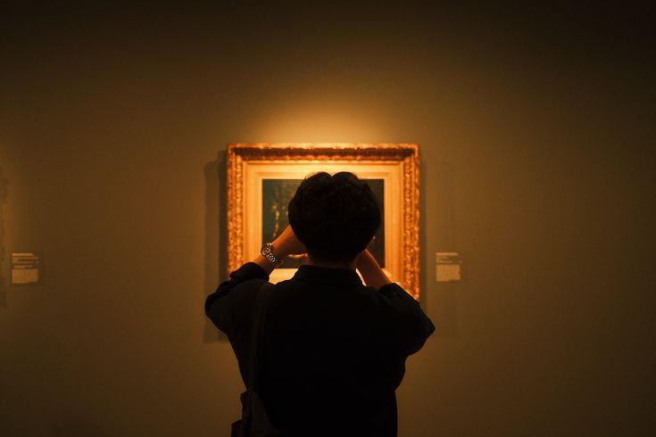

The branch of philosophy that asks what makes something beautiful,
meaningful, or artful — exploring beauty, creativity, artistic
expression, taste, interpretation, and the nature of aesthetic
experience in art, nature, culture, and everyday life.
What is Aesthetics?
Aesthetics is the branch of philosophy concerned with beauty, art,
taste, aesthetic value, and the nature of aesthetic experience. It asks
what makes something beautiful or ugly, what distinguishes a work of art
from an ordinary object, and why certain experiences seem aesthetically
significant. Aesthetic philosophy therefore includes questions about
painting, sculpture, literature, music, architecture, theatre, film,
photography, design, and other artistic practices, while also extending
beyond art to landscapes, natural environments, objects, and ordinary
experiences that can be perceived as beautiful, elegant, harmonious,
moving, or sublime.
Aesthetics asks not just what art depicts, but why certain forms,
experiences, and objects move us aesthetically at all.
The term aesthetics is derived from the Greek
aisthēsis, meaning perception or sense experience, but the word
itself belongs to the vocabulary of modern European philosophy.
Alexander Gottlieb Baumgarten gave the term a systematic philosophical
role in the eighteenth century, particularly through his work
Aesthetica. The field that developed around the term was never
simply a philosophy of beautiful objects. It became an investigation of
perception, feeling, judgment, artistic creation, representation,
imagination, interpretation, and value.
Aesthetics therefore asks questions that are simultaneously
philosophical and deeply connected with ordinary human experience. Why
can a melody move us even when it contains no literal statement? Why can
a painting be powerful even when its subject is disturbing? Why do
people disagree about whether a novel, film, building, or piece of music
is beautiful while still believing that some judgments of taste are
better supported than others? These questions reveal that aesthetic
experience involves more than passive pleasure: it can involve
attention, emotion, imagination, interpretation, cultural knowledge, and
critical judgment.
Aesthetics also investigates the relationship between aesthetic value
and other kinds of value. A work of art may be beautiful, morally
troubling, politically significant, intellectually challenging,
historically important, or technically innovative at the same time.
Philosophers therefore ask whether aesthetic value can be separated from
moral, cognitive, social, or practical value. The study of aesthetics
ultimately examines how human beings encounter and create forms of
meaning through perception, imagination, emotion, and artistic practice.
Core Questions Aesthetics Asks
Aesthetics is organized around a set of persistent questions about
beauty, art, artistic value, taste, and experience. Some questions have
been debated since antiquity, while others emerged only after modern
artistic practices challenged older definitions of art. The central
philosophical problem is not merely deciding which things are beautiful,
but understanding what beauty, art, and aesthetic value actually are.
Every act of artistic creation implicitly answers a philosophical
question about what art is, what it can express, and what it is for.
What is beauty? Is beauty an objective feature of
things, a response produced in perceivers, or a relation between an
object and an appropriately situated observer?
What makes something a work of art? Is art defined by
imitation, expression, form, intention, interpretation, artistic
practices, or its relationship to an art-historical and institutional
context?
What is aesthetic experience? Why do certain objects
and experiences command concentrated attention, pleasure, wonder,
emotion, contemplation, or absorption?
Is aesthetic judgment subjective? If people can
disagree about beauty, can some judgments of taste nevertheless be
better informed, more perceptive, or more defensible than others?
What is art's purpose? Should art imitate reality,
express emotion, communicate ideas, provide pleasure, reveal truth,
challenge social conventions, or serve no single purpose?
Can art be morally evaluated? Can moral defects make
a work aesthetically worse, or should aesthetic value remain
independent of ethical judgment?
Does artistic intention matter? Should understanding
what an artist intended influence how a work is interpreted and
judged?
Can nature be aesthetically valuable? Does a
mountain, forest, sunset, or storm possess aesthetic value
independently of human artistic creation?
What Is Aesthetic Experience?
Aesthetic experience refers to the distinctive way people can encounter
objects, environments, performances, or works of art with heightened
attention to their perceptual and expressive qualities. It may involve
pleasure, fascination, wonder, emotional intensity, contemplation, or a
sense of being absorbed in what is perceived. Although philosophers have
proposed many different accounts, aesthetic experience is generally not
reducible to simple sensory enjoyment. A person can have a powerful
aesthetic response to something tragic, disturbing, melancholic, or even
frightening.
The concept also raises an important question about attention. When
listening closely to a symphony, examining the composition of a
painting, reading a poem, or watching a carefully constructed film
scene, the perceiver may temporarily focus on qualities that would be
ignored during ordinary practical activity. Shape, rhythm, color,
texture, movement, tone, narrative structure, contrast, atmosphere, and
expressive qualities can become objects of sustained attention.
Aesthetic experience can therefore transform the way an ordinary object
or event is perceived.
Philosophers disagree about whether aesthetic experience requires a
special mental attitude separated from practical concerns. Some theories
emphasize disinterested attention, while others argue that aesthetic
experience can remain connected to emotion, action, history, culture,
social meaning, and practical life. This disagreement is especially
important for contemporary aesthetics because many experiences outside
museums and concert halls can have aesthetic significance, including
cooking, fashion, architecture, digital media, sports, gardens, urban
spaces, and everyday design.
John Dewey's Art as Experience played an important role in
challenging the idea that art should be treated as something completely
separated from ordinary life. Dewey emphasized the continuity between
artistic creation, perception, emotion, and experience. From this
perspective, aesthetics is not merely the study of special objects kept
inside galleries; it can also investigate how human beings organize
experience into meaningful and satisfying forms.
History of Aesthetics
Philosophical reflection on beauty and art is much older than the modern
discipline called aesthetics. Ancient Greek philosophers considered
beauty, proportion, harmony, imitation, poetry, music, and the education
of emotion long before the word "aesthetics" acquired its modern
philosophical meaning. Plato explored beauty through dialogues such as
the Symposium and Phaedrus, while also criticizing
certain forms of artistic imitation in the Republic. His
philosophy connects beauty with questions about knowledge, desire, the
Forms, and the transformation of the soul.
Aristotle developed a substantially different approach. In the
Poetics, he analyzed tragedy, plot, character, imitation
(mimesis), and the effects of dramatic representation.
Aristotle treated imitation as a fundamental human capacity rather than
simply as a deceptive copy of reality. His account of tragedy, including
the controversial concept of catharsis, became one of the most
influential foundations for later philosophical discussions of art,
emotion, narrative, and representation.
Medieval philosophers did not establish aesthetics as a separate
discipline, but they developed important theories of beauty within
metaphysics, theology, and discussions of creation. Thinkers influenced
by Plato and Neoplatonism connected beauty with unity, order,
proportion, goodness, and divine reality. Augustine examined beauty in
relation to order and number, while Thomas Aquinas associated beauty
with features traditionally discussed as proportion, integrity, and
clarity. Medieval discussions therefore often treated beauty as
connected to broader questions about being, creation, truth, and the
nature of God.
Kant's Critique of Judgment transformed philosophical
thinking about aesthetic judgment, beauty, and the sublime.
Aesthetics became a distinct, named philosophical discipline in the
eighteenth century. Alexander Baumgarten's use of the term helped
establish a systematic philosophical study of sensory cognition and
aesthetic experience. David Hume examined taste, criticism, and the
conditions under which some aesthetic judgments might deserve greater
authority than others. Edmund Burke developed an influential distinction
between beauty and the sublime, while Immanuel Kant's
Critique of the Power of Judgment of 1790 gave aesthetic
judgment a central role in modern philosophy.
Nineteenth- and twentieth-century philosophers expanded the field in
dramatically different directions. Hegel interpreted art historically as
a sensuous expression of spirit and human freedom. Schopenhauer gave art
a distinctive role in relation to suffering and the will, while
Nietzsche explored the relationship between art, life, tragedy,
creativity, and cultural values. Later philosophers such as John Dewey
challenged the separation of art from ordinary experience, while
twentieth-century analytic philosophers examined the definition of art,
aesthetic properties, interpretation, representation, artistic
intention, and the institutional context of artworks.
Major Aesthetic Theories
Aesthetic theories attempt to explain why particular objects, practices,
or experiences have artistic or aesthetic value. No single theory has
been accepted as a complete explanation of every kind of art. Instead,
different theories emphasize different dimensions of artistic activity,
including representation, formal organization, emotional expression,
artistic intention, historical context, and institutional recognition.
Mimetic theory, associated with ancient discussions by
Plato and Aristotle, treats imitation or representation as central to
art. An artwork can represent people, actions, objects, events, or
possible worlds. However, imitation does not necessarily mean producing
a photographically accurate copy. Artistic representation can select,
reorganize, exaggerate, idealize, symbolize, or transform its subject in
order to communicate something that ordinary perception might not
reveal.
Formalist approaches emphasize perceptible relationships such as line,
color, shape, rhythm, structure, and composition.
Formalism holds, in its strongest versions, that
aesthetic value depends primarily on formal properties such as line,
color, composition, rhythm, structure, or arrangement. A painting may be
aesthetically powerful because of how its colors and shapes interact,
while a musical work may derive much of its value from rhythm, harmony,
melody, and structural development. Contemporary formalism includes more
moderate positions, and critics have argued that historical knowledge,
representation, function, and context can sometimes affect even what
counts as an artwork's aesthetic properties.
Expression theories hold that art is importantly
related to the expression or communication of emotion. A successful work
may communicate sadness, joy, anger, serenity, tension, irony, or other
affective qualities without simply reporting that the artist experienced
them. Expressionist approaches therefore ask how artistic form can
embody, communicate, transform, or invite emotional responses rather
than treating art merely as a representation of external objects.
Institutional theories of art, associated especially
with twentieth-century philosophers such as George Dickie, emerged
partly in response to works that could not easily be explained by
traditional definitions based on beauty, imitation, or formal qualities.
Institutional approaches emphasize the role of art-world practices,
conventions, and institutions in conferring or recognizing art status.
Such theories do not imply that institutions can arbitrarily turn
absolutely anything into valuable art; rather, they attempt to explain
how social practices help determine what counts as an artwork within a
historical art tradition.
Beauty and Aesthetic Value
Beauty is one of the oldest and most controversial concepts in
philosophical aesthetics. Traditional theories have associated beauty
with qualities such as proportion, harmony, unity, order, symmetry, or
coherence. Other approaches emphasize the response of the perceiver,
suggesting that beauty is connected to pleasure, approval, or a
particular kind of aesthetic experience. The disagreement therefore
concerns not simply which things are beautiful, but what kind of fact a
judgment of beauty is.
Beauty is also only one form of aesthetic value. An artwork can be
aesthetically powerful without being conventionally beautiful. A tragic
painting may be disturbing, a modernist composition may be deliberately
dissonant, and a horror film may create aesthetic value through tension,
grotesque imagery, or controlled discomfort. Philosophers therefore
distinguish beauty from broader concepts such as elegance, grace,
expressiveness, dramatic power, originality, unity, complexity,
meaningfulness, and the sublime.
The concept of aesthetic value also raises the question of whether
aesthetic properties are independent of ordinary properties. A
painting's colors and shapes can be directly perceived, but
understanding its historical significance, symbolism, technique, or
cultural context may alter the way those same features are experienced.
This has led philosophers to debate whether aesthetic properties are
purely perceptual or whether aesthetic judgment can legitimately depend
upon knowledge and interpretation.
Contemporary philosophy therefore tends to treat aesthetic value as a
complex subject rather than reducing it to beauty alone. Aesthetic
evaluation can involve the perceptual character of an object, the
quality of an artistic achievement, the relationship between parts and
whole, the expressive or representational success of a work, and the
quality of the experience it makes possible. This broader understanding
allows aesthetics to address both traditional fine art and the enormous
variety of aesthetic practices found in contemporary culture.
Aesthetic Judgment and Taste
An aesthetic judgment occurs when someone evaluates an object or
experience using concepts such as beautiful, elegant, graceful, ugly,
powerful, harmonious, moving, successful, or artistically significant.
Such judgments are often expressed as personal responses, yet people
frequently give reasons for them. We do not merely say that a painting
is beautiful; we may point to its composition, use of color, historical
significance, expressive power, balance, originality, or technical
achievement.
This creates a philosophical tension. If aesthetic judgments are based
on personal feeling, why do people argue about them as though reasons
and standards matter? David Hume addressed this problem by acknowledging
the importance of sentiment while arguing that some critics are better
positioned to judge than others. Experience, practice, comparison,
sensitivity, attention, and freedom from prejudice can contribute to
more reliable judgments of taste. His position therefore cannot be
reduced to the claim that every personal preference is equally good
criticism.
Kant developed a different account in his theory of judgments of taste.
For Kant, a judgment of beauty is grounded in a feeling of pleasure
rather than in a determinate concept that proves an object beautiful.
Yet when a person judges something beautiful, the judgment is expressed
as though others ought to agree. Kant describes this unusual combination
through the idea that judgments of taste involve a claim to universal
validity without being based on a universal rule or concept of beauty.
Taste is therefore not simply a list of personal likes and dislikes. It
can be cultivated through exposure, comparison, learning, historical
understanding, and careful attention. At the same time, aesthetic
disagreements are influenced by culture, social background, historical
circumstances, and individual experience. Philosophy of taste explores
how subjective response and shared standards can coexist without
assuming that all aesthetic disagreements have one simple objective
solution.
The Sublime
Not everything that moves us aesthetically is beautiful in the
conventional sense. Philosophers have long distinguished beauty from the
sublime — an overwhelming aesthetic response to
something vast, powerful, threatening, or difficult to comprehend. A
towering mountain, violent storm, immense ocean, enormous architectural
space, or seemingly infinite night sky can produce an experience that
combines awe, fascination, vulnerability, and wonder.
The sublime combines awe, magnitude, or power with an aesthetic
response distinct from ordinary experiences of beauty.
Edmund Burke gave the sublime a powerful psychological account in the
eighteenth century, connecting it with experiences of vastness,
obscurity, danger, power, and terror. For Burke, the sublime differs
from beauty because it can involve an intense mixture of fear and
pleasure when the threatening object is encountered under conditions of
relative safety. His account helped establish the sublime as a major
category of aesthetic experience rather than simply an unusually strong
form of beauty.
Kant transformed the concept by distinguishing the mathematical sublime
from the dynamical sublime. The mathematical sublime concerns encounters
with magnitude that seem too vast for imagination to comprehend as a
complete sensory whole. The dynamical sublime concerns experiences of
overwhelming natural power. In both cases, Kant emphasizes a tension
between what the senses and imagination can present and the mind's
capacity to think beyond those sensory limits.
The distinction between beauty and sublimity remains important because
it demonstrates that aesthetic value cannot be reduced to pleasantness.
Aesthetic experiences can involve awe, melancholy, terror, strangeness,
grandeur, tension, or even discomfort. Contemporary art frequently uses
such experiences deliberately, showing how aesthetic value can emerge
from emotional complexity rather than simple visual or sensory pleasure.
Art and Morality
Should art ever be judged by moral standards, or should aesthetic and
ethical evaluation be kept entirely separate? This question becomes
especially pressing when a technically powerful work glorifies cruelty,
prejudice, violence, or exploitation, or when an artist's personal
conduct conflicts sharply with the values associated with the work. The
problem asks whether moral features belong among the properties that can
influence aesthetic evaluation.
Debates over art and morality ask whether aesthetic value can ever be
completely separated from the moral responses generated by a work.
Autonomism holds, in broad terms, that aesthetic value
should be distinguished from moral value. On a strong version of this
view, moral defects do not automatically make an artwork aesthetically
worse. A work can therefore possess considerable artistic or aesthetic
achievement even when its moral message is objectionable. This position
protects the idea that art should not be reduced to moral instruction or
judged solely according to ethical standards.
Moralism argues that moral features can sometimes be
aesthetically relevant. If a novel encourages the audience to sympathize
with a character through a morally distorted representation, the work's
ethical failure may also constitute an artistic failure. A related
position, often called ethicism, maintains that moral
defects or virtues can affect aesthetic value when they are relevant to
the responses a work appropriately invites. These theories differ in
detail, but all challenge the assumption that artistic and moral
evaluation must always operate independently.
The issue becomes especially complicated when a work contains morally
disturbing material without endorsing it. A film depicting cruelty may
condemn cruelty rather than celebrate it, while a novel may deliberately
present an unreliable narrator whose beliefs are not those of the
author. Philosophical aesthetics therefore asks readers and viewers to
distinguish what a work represents, what it invites audiences to feel or
believe, and what the artist or work actually endorses. The relationship
between art and morality remains an active area of contemporary
aesthetics.
Is Beauty Objective or Subjective?
Few questions in aesthetics provoke as much everyday disagreement as
this one: is beauty a genuine property of objects in the world, waiting
to be recognized, or does it exist only in the response of the person
perceiving it? The question appears simple, but it becomes difficult
once we consider the fact that people can disagree strongly about beauty
while also treating some judgments as more informed, perceptive, or
defensible than others.

"Beauty is in the eye of the beholder" captures one side of a debate
about whether aesthetic value belongs to objects, perceivers, or the
relationship between them.
Aesthetic objectivists argue that beauty depends in
some meaningful way on features of objects or works themselves.
Proportion, harmony, symmetry, unity, complexity, balance, or other
properties may provide reasons why one thing is aesthetically better
than another. Aesthetic subjectivists, by contrast,
locate beauty more fundamentally in the responses, sentiments, or
preferences of perceivers. On a strong subjectivist view, there is no
beauty independent of a suitable experience or response.
The disagreement is not necessarily limited to these two extremes.
Contemporary philosophers have developed relational and
response-dependent accounts in which aesthetic properties depend upon
how appropriately situated perceivers respond to objects. Such theories
attempt to explain why aesthetic judgments are connected to human
experience while also allowing room for standards, reasons, criticism,
and disagreement.
David Hume attempted to explain this tension through his account of
taste. Although aesthetic response originates in sentiment, he argued
that experienced and sensitive critics can be more reliable judges than
people whose reactions are distorted by ignorance, prejudice, lack of
practice, or temporary circumstances. The result is neither a simple
objective theory of beauty nor the claim that every preference is
equally valuable. It is an attempt to explain why aesthetic judgment can
be subjective in origin while still supporting meaningful standards of
criticism.
Art, Representation, and Imitation
Representation is one of the oldest problems in the philosophy of art.
Paintings can depict people and places, novels can represent characters
and events, films can construct fictional worlds, and photographs can
record aspects of reality. Yet representation is not necessarily a
transparent copy of the world. Artists select what to show, what to
omit, how to organize it, and what perspective the audience should
adopt.
Plato's criticism of artistic imitation partly concerns the relationship
between appearance and reality. In the Republic, he worries
that certain forms of poetry and visual representation imitate
appearances without providing genuine knowledge of what they represent.
Aristotle, however, gives imitation a more constructive role. In the
Poetics, artistic representation can reveal patterns of human
action and make intelligible possibilities that are not simply records
of actual events.
Modern and contemporary art has made the concept of representation even
more complicated. Abstract art may deliberately avoid recognizable
subjects, while conceptual art may make an idea or artistic context more
important than visual resemblance. Photography and film raise questions
about mechanical recording and artistic selection, while digital art and
computer-generated imagery introduce new possibilities for creating
objects and environments that have no direct physical counterpart.
The philosophy of representation therefore asks whether artworks must
represent anything at all, what makes representation successful, and how
audiences recognize what a work represents. These questions connect
aesthetics with philosophy of language, perception, imagination,
epistemology, and philosophy of mind because understanding a
representation requires both perceptual information and interpretive
activity.
Artistic Expression and Emotion
Art is often described as a form of emotional expression. A piece of
music may sound joyful or mournful, a painting may appear tense or
serene, and a poem may communicate longing, anger, wonder, or grief. But
philosophical theories of expression must explain what exactly is being
expressed. An artwork can express an emotion without the artist
currently experiencing that emotion, and an audience can recognize
emotional qualities without knowing anything about the artist's personal
life.
Expression theories therefore distinguish between an artwork
representing an emotion, causing an emotion in an audience, and
possessing an expressive quality. A painting can look melancholy without
literally depicting a person feeling sadness. Likewise, music can sound
triumphant without representing a specific triumphant event. The
relationship between formal qualities and emotional response is
consequently one of the central problems in the philosophy of artistic
expression.
Artistic expression also raises questions about whether an artist's
intention is necessary for expression. Some philosophers give
significant weight to what the artist intended to communicate, while
others argue that artworks can acquire meanings and expressive qualities
that exceed or differ from their creators' intentions. This disagreement
connects the philosophy of expression with broader debates about
interpretation, authorship, historical context, and the independence of
artworks from their creators.
Artistic Intention and Interpretation
When interpreting an artwork, should we try to discover what the artist
intended, or should the meaning of a work be determined by the work
itself and the experience of its audience? This problem is especially
important for literature, painting, film, and conceptual art, where a
creator's intentions may provide useful evidence without necessarily
exhausting all possible meanings.
Intentionalist theories give an important role to the artist's purposes,
plans, and communicative intentions. Anti-intentionalist approaches warn
that an artist may misunderstand their own work, change their mind, or
fail to control the meanings audiences reasonably discover in it.
Historical approaches may instead emphasize the relationship between a
work, its cultural context, its conventions, and the practices of its
period.
Interpretation is therefore not simply the act of finding a hidden
message placed inside an artwork. It involves evidence, perception,
cultural knowledge, historical information, artistic conventions, and
critical reasoning. A strong interpretation should explain significant
features of the work rather than merely projecting any arbitrary meaning
onto it. This is why aesthetics overlaps with hermeneutics, literary
theory, philosophy of language, and the study of culture.
Art, Creativity, and Artistic Genius
Creativity is another central problem in aesthetics. Artists are often
valued for producing something original, unexpected, technically
accomplished, or transformative. Yet originality alone does not
guarantee artistic value. A completely unprecedented object might be
meaningless or aesthetically unsuccessful, while a work influenced by
earlier traditions can be profoundly creative through its transformation
of existing forms.
Kant gave artistic genius an important role in his aesthetics. He
described genius as a natural capacity through which new rules for art
can emerge, while also emphasizing that genuine art involves more than
spontaneous originality. Artistic creation requires the interaction of
imagination, judgment, form, and communicability. Genius therefore does
not mean simply producing random novelty; it concerns the ability to
generate exemplary artistic possibilities.
Contemporary aesthetics also questions the romantic image of the
isolated artistic genius. Artistic production frequently depends upon
collaboration, traditions, technologies, institutions, audiences,
cultural communities, and inherited techniques. Film, architecture,
theatre, digital media, and music demonstrate particularly clearly that
creative achievement can be collective. The philosophy of creativity
therefore asks whether originality belongs primarily to individuals,
works, practices, or communities.
Aesthetics and the Beauty of Nature
Aesthetics is not limited to objects deliberately created by human
beings. Natural environments can also generate profound aesthetic
experiences. Mountains, forests, oceans, deserts, rivers, skies,
animals, and changing seasons may be described as beautiful, sublime,
peaceful, dramatic, or awe-inspiring even though they were not produced
as artworks. This raises the question of whether the aesthetic
appreciation of nature differs fundamentally from the appreciation of
art.
Traditional theories sometimes evaluated natural beauty using concepts
originally developed for art, such as harmony, proportion, composition,
or picturesque appearance. Other approaches argue that nature should be
appreciated on its own terms rather than treated as though it were a
collection of artworks. Knowledge of ecology, geology, biology, and
environmental history can also influence aesthetic appreciation by
revealing patterns and relationships that ordinary perception does not
immediately disclose.
Environmental aesthetics has expanded these questions by examining human
relationships with landscapes, ecosystems, cities, gardens, and built
environments. Aesthetic appreciation can influence how people value and
care for places, although aesthetic value should not be treated as the
only reason to protect nature. Ecological, moral, scientific, cultural,
and aesthetic considerations can overlap while remaining philosophically
distinct.
Everyday Aesthetics
Contemporary aesthetics has increasingly expanded beyond traditional
fine art to examine the aesthetic dimensions of everyday life. Clothing,
architecture, food, interior design, gardens, technology, urban spaces,
advertising, sports, and ordinary social activities can all involve
aesthetic choices and experiences. This broader approach challenges the
assumption that aesthetics belongs exclusively to museums, concert
halls, theatres, and galleries.
Everyday aesthetics also changes the philosophical question. Instead of
asking only what makes a painting a successful artwork, philosophers can
ask what makes a meal satisfying, a room harmonious, a public space
inviting, a piece of clothing elegant, or an ordinary activity graceful.
These experiences can involve practical purposes at the same time as
aesthetic value. A well-designed chair, for example, may be functional,
comfortable, durable, and aesthetically pleasing simultaneously.
John Dewey's philosophy is particularly important to this broader
understanding because he rejected a sharp separation between art and
ordinary experience. In Art as Experience, he explored how
perception, action, emotion, environment, and meaning can form unified
experiences. This approach helped influence later work on popular
culture, environmental aesthetics, and everyday aesthetic experience.
Art, Technology, and Digital Culture
New technologies repeatedly force aesthetics to reconsider its basic
concepts. Photography challenged older distinctions between artistic
representation and mechanical reproduction. Film introduced moving
images, editing, sound, and new forms of narrative. Digital technology
introduced interactive environments, virtual spaces, algorithmic
processes, video games, digital painting, and forms of art that can
change in response to users or systems.
Digital art also complicates the distinction between original and copy.
A traditional painting is normally a unique physical object, while a
digital work can exist through files that are copied perfectly and
displayed across many devices. This raises questions about authenticity,
ownership, originality, preservation, and what exactly constitutes the
artwork when the same digital structure can have countless instances.
Artificial intelligence introduces further philosophical questions about
creativity, authorship, intention, originality, and artistic agency. An
AI-generated image may possess aesthetically interesting properties, but
philosophers can still ask whether its production counts as artistic
creativity, whose intentions determine its meaning, and how training
data and human prompts contribute to the final result. These questions
show that technological change does not make aesthetics irrelevant;
instead, it creates new cases through which traditional theories can be
tested.
Can Art Be Separated from Society?
Art is created within social and historical conditions. Artists inherit
languages, techniques, genres, symbols, institutions, technologies, and
cultural traditions from earlier generations. Consequently, an artwork
can communicate meanings that depend partly upon the society in which it
was created. Understanding a historical painting, novel, or monument may
therefore require knowledge of political institutions, religious
beliefs, social hierarchies, or cultural conventions.
This does not mean that an artwork has only one politically or
historically determined meaning. Philosophers and critics continue to
debate how much weight should be given to historical context and whether
artworks can acquire new meanings when encountered by later audiences. A
work can preserve features of its original context while also becoming
part of entirely different cultural conversations.
Social and political aesthetics consequently examines how art can
reinforce identities, challenge conventions, represent marginalized
experiences, construct public memory, or shape collective attitudes.
Such questions connect aesthetics with ethics, political philosophy,
social philosophy, philosophy of language, and cultural theory. They
also demonstrate that aesthetic value can be studied without assuming
that art exists in a completely isolated realm separated from human
life.
AESTHETICIANS
Key Thinkers in Aesthetics
Philosophers whose ideas transformed how we understand beauty, art,
taste, creativity, aesthetic judgment, and aesthetic experience.
Dewey's Art as Experience challenged the sharp separation
between fine art and ordinary life. He emphasized the continuity of
perception, action, emotion, environment, and meaning, helping broaden
aesthetics toward everyday experience, popular culture, and the
relationship between art and human life.
Contemporary Aesthetics
Contemporary aesthetics is a broad and diverse field rather than a
single philosophical school. Analytic philosophers continue to
investigate the definition of art, aesthetic properties, aesthetic
judgment, interpretation, representation, imagination, artistic
intention, and aesthetic experience. Other philosophers examine social
and political aesthetics, feminist approaches to beauty, environmental
aesthetics, popular culture, architecture, photography, film, digital
media, and everyday aesthetic life.
One major contemporary question concerns whether there can be a
universal definition of art. Traditional definitions have emphasized
imitation, beauty, expression, or formal properties, but
twentieth-century art repeatedly produced works that resisted these
categories. Readymades, conceptual works, installations, performance
art, found objects, and experimental media have encouraged philosophers
to ask whether art is defined by intrinsic properties or by historical,
social, and institutional relationships.
Contemporary aesthetics also pays increasing attention to the fact that
aesthetic judgment does not occur in a cultural vacuum. Ideas of beauty
can be influenced by social power, gender, race, class, colonial
history, advertising, technology, and cultural institutions.
Philosophers therefore investigate not only what beauty is but also who
gets to define standards of beauty, how those standards are transmitted,
and how aesthetic practices can reinforce or challenge social
structures.
At the same time, contemporary aesthetics has not abandoned traditional
philosophical questions. Beauty, ugliness, taste, the sublime, artistic
value, interpretation, expression, representation, and aesthetic
experience remain central topics. The field has instead expanded its
range, applying these questions to an increasingly wide variety of human
experiences and artistic practices.
Aesthetics and Other Branches of Philosophy
Aesthetics overlaps naturally with many other branches of philosophy.
Its questions about beauty and value connect it with
ethics, while its investigation of perception,
interpretation, and artistic knowledge connects it with
epistemology. Questions about what artworks are,
whether aesthetic properties are real, and how objects acquire artistic
status connect aesthetics with metaphysics.
Aesthetics also has important relationships with
philosophy of mind. Understanding aesthetic experience
requires investigation of perception, emotion, imagination, attention,
consciousness, and memory. Philosophy of language becomes relevant when
philosophers examine metaphor, literary meaning, fictional reference,
interpretation, and the relationship between artistic statements and
ordinary language.
Aesthetics also intersects with
political philosophy when art is used to shape public
identity, challenge political authority, or represent social groups.
Philosophy of science becomes relevant when aesthetic concepts appear in
scientific visualization, mathematical elegance, or theories of
scientific explanation. The result is a field that cannot be isolated
neatly from the rest of philosophy because art and aesthetic experience
touch almost every dimension of human life.
Famous Problems in Aesthetics
One of the most persistent problems is the
definition of art. If art is not defined simply by
beauty or imitation, what distinguishes an artwork from an ordinary
object? A urinal displayed as a readymade, an empty gallery, a
performance, or a conceptual instruction can force us to reconsider
assumptions about artistic objects. The problem demonstrates that the
philosophy of art must account for artistic practices that were
impossible to anticipate from older theories.
Another problem concerns forgery and authenticity. If
two paintings are visually indistinguishable but one is an original and
the other is a perfect forgery, do they possess exactly the same
aesthetic value? Historical knowledge can change how an artwork is
experienced, suggesting that aesthetic appreciation may depend on more
than immediately perceptible features. The problem also raises questions
about authorship, originality, provenance, and artistic history.
The problem of interpretation asks how we should
determine what an artwork means. Can there be several correct
interpretations? Does the artist's intention settle the matter? Can
later audiences discover meanings unavailable to the original audience?
These questions are particularly important for literature, film, poetry,
conceptual art, and works whose meanings depend heavily on cultural or
historical context.
The problem of aesthetic value asks whether artistic
value can be reduced to pleasure, beauty, emotional expression,
cognitive significance, moral value, technical achievement, or some
combination of these. The diversity of art makes simple answers
difficult. A work may be aesthetically important because it is
beautiful, but another may be valuable precisely because it is
disturbing, intellectually challenging, historically transformative, or
formally revolutionary.
Aesthetics FAQ
What is aesthetics in philosophy?
Aesthetics is the branch of philosophy that investigates beauty, art,
taste, aesthetic judgment, aesthetic value, and aesthetic experience. It
asks what makes something beautiful or artistically valuable and
examines how human beings experience, create, interpret, and evaluate
art and other aesthetically significant objects and environments.
Is aesthetics only about beauty?
No. Beauty is one major topic, but aesthetics also studies ugliness, the
sublime, artistic expression, representation, creativity,
interpretation, taste, aesthetic experience, artistic value, and the
definition of art. Contemporary aesthetics also investigates everyday
objects, nature, architecture, popular culture, digital media, and
environmental experience.
Who founded aesthetics as a philosophical discipline?
Alexander Gottlieb Baumgarten is commonly associated with establishing
aesthetics as a distinct philosophical discipline in eighteenth-century
Europe and with giving the field its modern name. However, philosophical
reflection on beauty and art is much older and can be traced through
ancient Greek, Hellenistic, Roman, medieval, and early modern
philosophy.
What did Kant say about beauty?
Kant argued that a judgment of beauty is based on disinterested pleasure
rather than practical desire or a determinate concept. At the same time,
people who judge something beautiful present their judgment as having a
kind of universal validity, even though beauty cannot be demonstrated by
a universal rule in the same way as a mathematical or scientific
conclusion.
What is the difference between beauty and the sublime?
Beauty is generally associated with forms of harmony, proportion, and
pleasurable appreciation, while the sublime involves experiences of
magnitude, power, awe, or overwhelmingness. Burke and Kant developed
particularly influential theories of the sublime, although they
explained the experience in significantly different ways.
Is beauty subjective?
Philosophers disagree. Subjectivist theories connect beauty strongly
with human responses, while objectivist theories argue that beauty
depends on features of objects or works themselves. Other theories
attempt to combine these insights by treating aesthetic properties as
dependent upon suitable responses while still allowing meaningful
standards and reasons for criticism.
What is aesthetic experience?
Aesthetic experience is a way of engaging with an object, artwork,
environment, or event through heightened attention to its perceptual,
expressive, formal, or other aesthetically significant qualities. It can
involve pleasure, wonder, emotional intensity, contemplation,
absorption, or even discomfort and awe.
Why Study Aesthetics?
Studying aesthetics helps us understand experiences that are central to
human life but difficult to explain in purely practical terms. People
create paintings, stories, music, buildings, films, photographs,
clothing, games, gardens, and countless other forms because they care
about how things look, sound, feel, express, communicate, and mean.
Aesthetics asks why these activities matter and what kinds of value they
create.
Aesthetic philosophy also develops critical thinking. Instead of
stopping at the statement "I like it" or "I do not like it,"
philosophical aesthetics asks what reasons support a judgment and
whether those reasons can be examined by other people. It teaches us to
distinguish personal preference from criticism, emotional response from
evaluation, and description from argument.
The study of aesthetics also reveals how closely art is connected with
broader philosophical questions. Beauty can lead to metaphysical
questions about whether aesthetic properties are real. Taste raises
epistemological questions about judgment and expertise. Art and morality
connect aesthetics with ethics. Interpretation connects it with language
and mind, while artistic institutions and cultural standards connect it
with society and political life.
Ultimately, aesthetics asks us to take seriously a dimension of human
experience that cannot be reduced to usefulness or survival. Aesthetic
experience can make us attentive to details, challenge our assumptions,
deepen emotional understanding, reveal unfamiliar perspectives, and
transform ordinary environments. To study aesthetics is therefore to ask
not only what beauty and art are, but how human beings use perception,
imagination, creativity, and judgment to make the world meaningful.